Soccer
US Withdraws from U-17 World Cup in Qatar Over Security Fears
The United States pulled out of the FIFA U-17 World Cup in Qatar just over a week before kickoff, citing security concerns in the Middle East.
United States • Sports
Scores, standings and the stories fans are searching for.
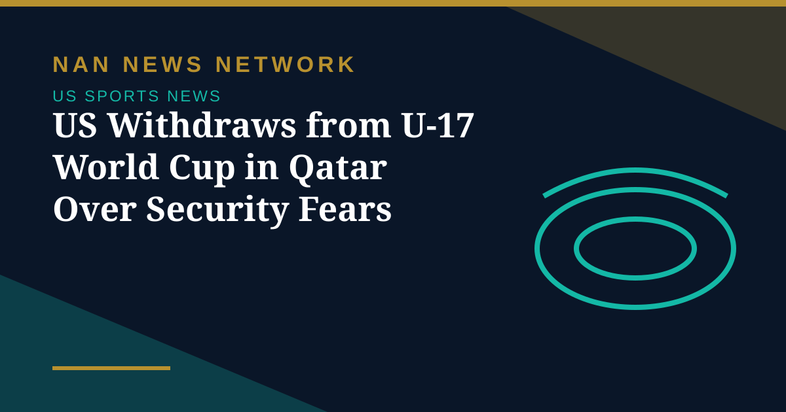
The United States pulled out of the FIFA U-17 World Cup in Qatar just over a week before kickoff, citing security concerns in the Middle East.
The United States pulled out of the FIFA U-17 World Cup in Qatar just over a week before kickoff, citing security concerns in the Middle East.
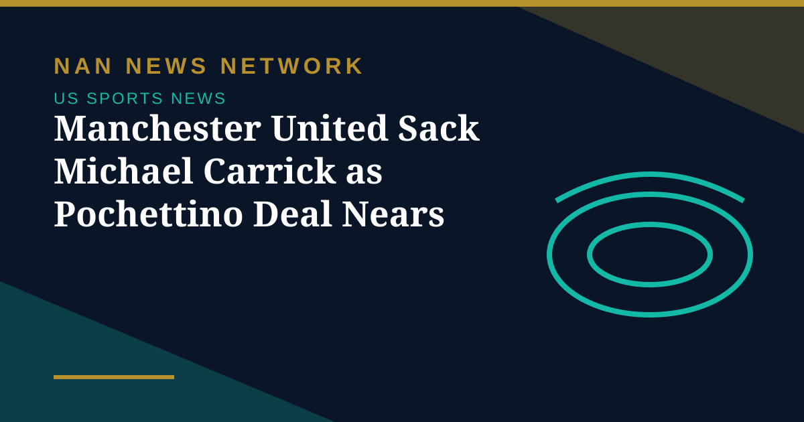
Manchester United sacked manager Michael Carrick after a dismal start left the club 18th in the Premier League, with Mauricio Pochettino the expected replacement.
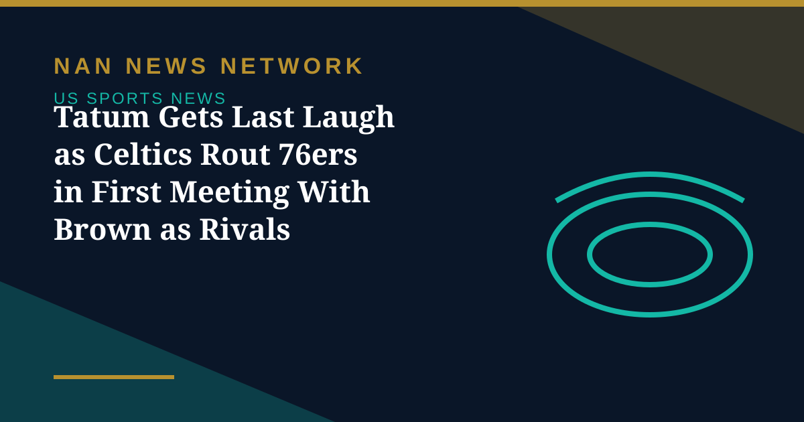
Jayson Tatum scored 21 points as the Celtics routed the 76ers on Tuesday night in Philadelphia, the first time he and former teammate Jaylen Brown faced off as opponents — ending the 76ers' unbeaten start.
The NFL trade deadline came and went with a whimper for New York's teams: the Giants balked at the Colts' asking price for Jonathan Taylor, and the Jets held on to their veterans despite sitting near the bottom of the standings.
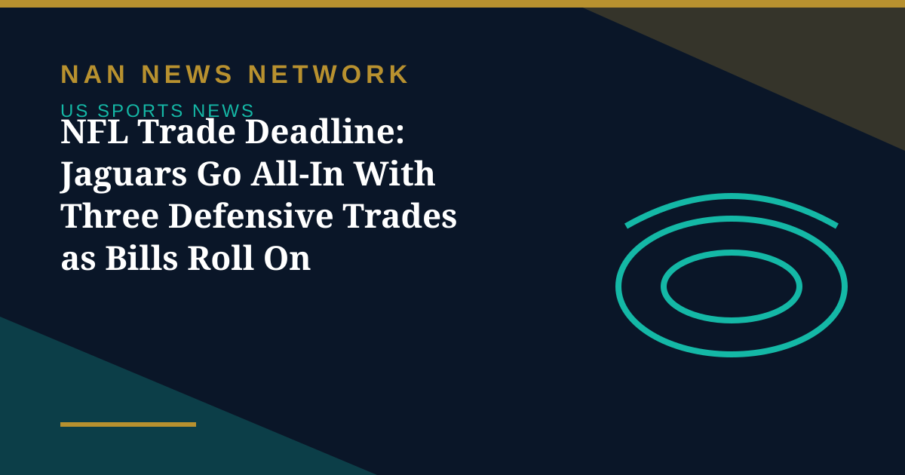
The Jacksonville Jaguars made three major defensive additions on Monday, acquiring Jordan Davis, Jessie Bates and Davon Godchaux, hours before the NFL trade deadline at 4 p.m. ET on Tuesday.
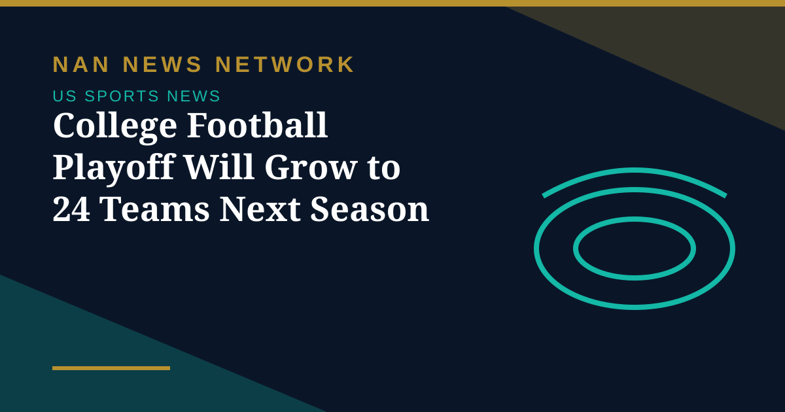
The College Football Playoff will double to 24 teams starting next season, the playoff and ESPN announced on Monday, with conference championship games dropped and ESPN paying an extra $1.7 billion over five years.
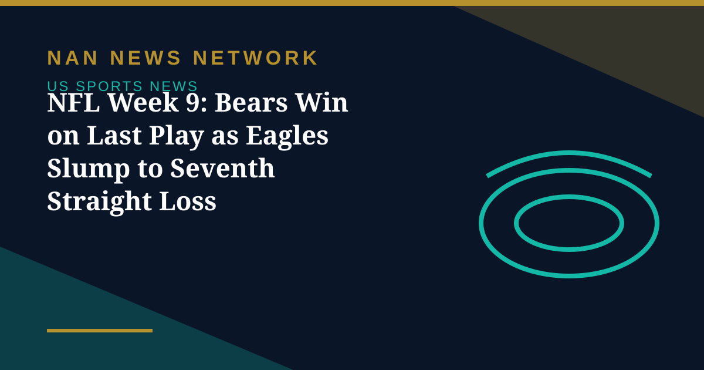
Cairo Santos kicked a field goal as time expired to lift Chicago past Tampa Bay, Jordan Love starred as Green Bay routed New England, and the Eagles lost a seventh straight game.
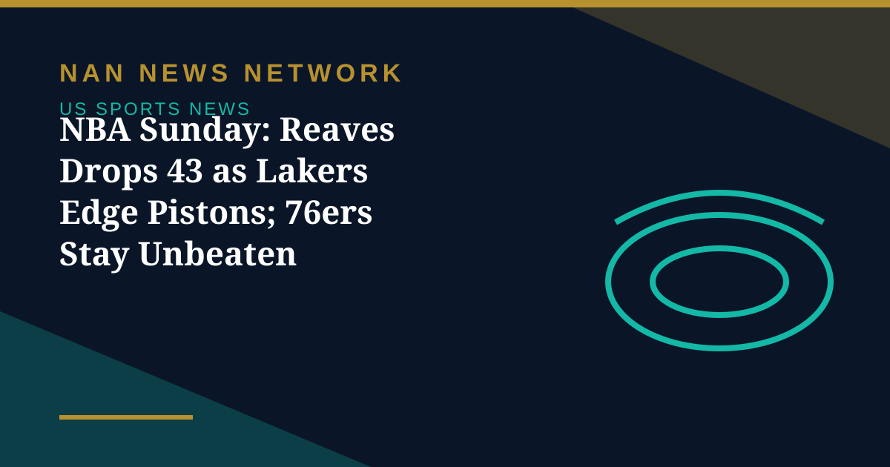
Austin Reaves poured in 43 points as the Lakers beat Detroit 121-116, Philadelphia outlasted Chicago 127-121, and Dallas crushed Brooklyn by 37.
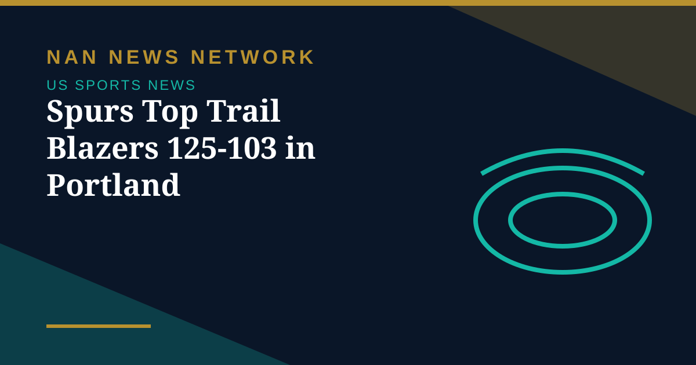
San Antonio beat the Portland Trail Blazers 125-103 on Saturday night at the Moda Center, a day after topping the Sacramento Kings.
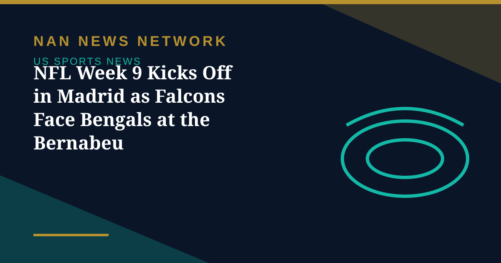
Week 9 of the NFL season opened in Spain, with the Atlanta Falcons taking on the Cincinnati Bengals at Real Madrid's Santiago Bernabeu stadium, ahead of a full Sunday slate in the US.
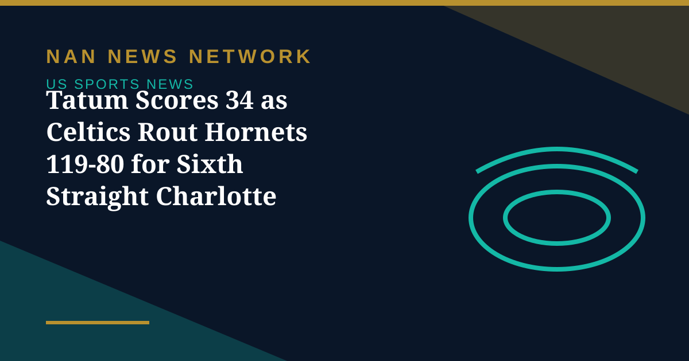
Jayson Tatum scored a game-high 34 points, including 18 in the first quarter, as the Boston Celtics blew out the Charlotte Hornets 119-80 on Friday night in Boston.
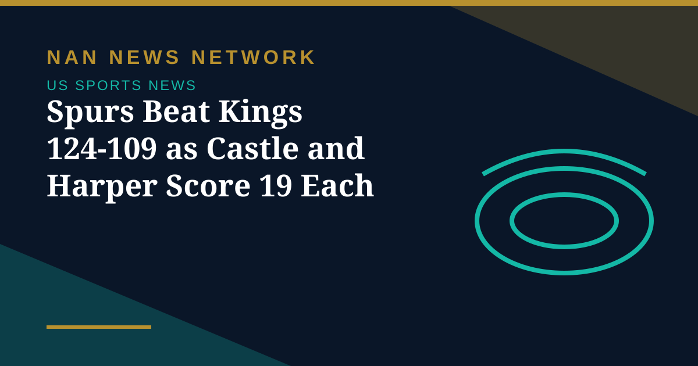
Stephon Castle and Dylan Harper each scored 19 points as the San Antonio Spurs beat the Sacramento Kings 124-109 on Friday night, improving to 7-2 while the Kings fell to 1-8.
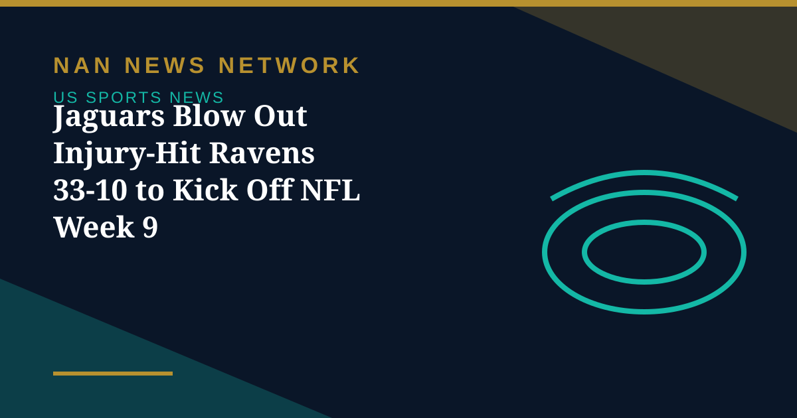
The Jacksonville Jaguars cruised to a 33-10 win over the Baltimore Ravens on Thursday Night Football, improving to 6-2 as the Ravens lost a fourth straight game behind third-string rookie quarterback Joe Fagnano.
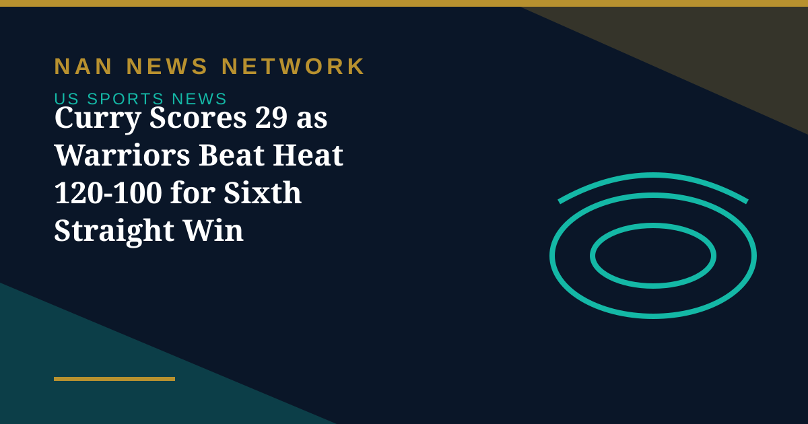
Stephen Curry scored 22 of his 29 points in the second half as the Golden State Warriors beat the Miami Heat 120-100 on Thursday night, extending their winning streak to six after an 0-3 start.

Victor Wembanyama scored a career-high 52 points with a career-best 24 rebounds, hitting the winning free throw with 24.2 seconds left as San Antonio beat Dallas 112-111 for a sixth straight win on Wednesday, November 4.

The College Football Playoff selection committee released its first rankings on Tuesday, November 3, with undefeated Miami No. 1 ahead of Georgia, Utah and defending champion Indiana, while Ohio State debuted at No. 12.
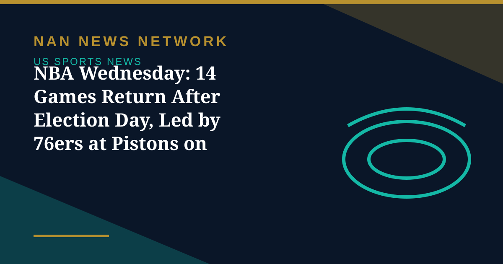
The NBA returns from its Election Day break with 14 games on Wednesday, November 4, headlined by the 7-1 76ers at the 6-1 Pistons on ESPN and Mavericks at Spurs in the late ESPN slot.
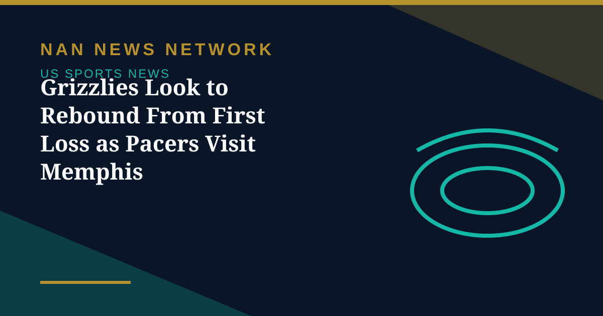
Memphis, the NBA's last unbeaten team until Monday's overtime loss to New Orleans, hosts Indiana on Wednesday, with the Pacers on a five-game losing streak but coming off a near-miss against Atlanta.
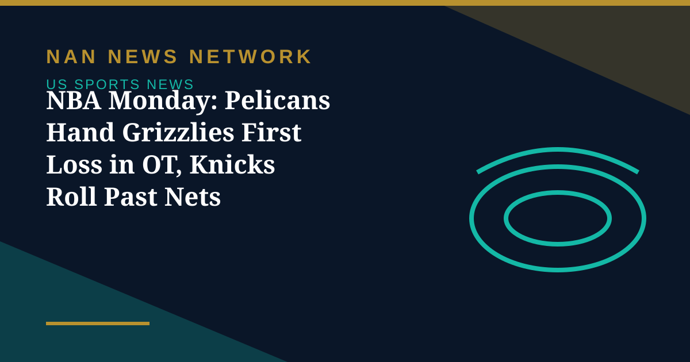
New Orleans outlasted Memphis 135-134 in overtime to end the Grizzlies' 6-0 start, the Knicks beat the Nets for a 15th straight time, and Luka Doncic scored 42 as the Lakers beat Miami, in Monday's NBA roundup.
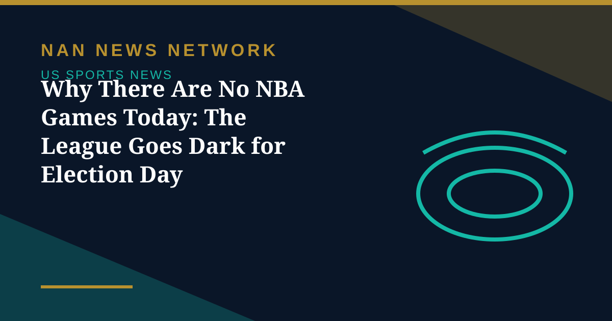
The NBA scheduled no games on Tuesday, November 3, for the fourth time in five years, so players, staff and fans can vote in the midterm elections — with all 15 teams having worn 'VOTE' shirts on Monday.
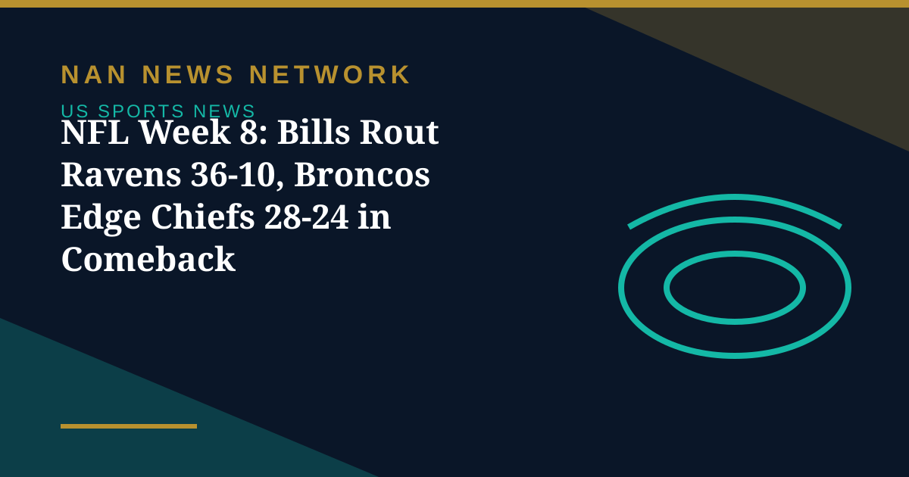
Buffalo routed Baltimore 36-10 as Lamar Jackson left with a thumb injury, Denver came back from 24-13 down to beat Kansas City 28-24, and Cincinnati and Arizona won overtime thrillers on Sunday, November 1.
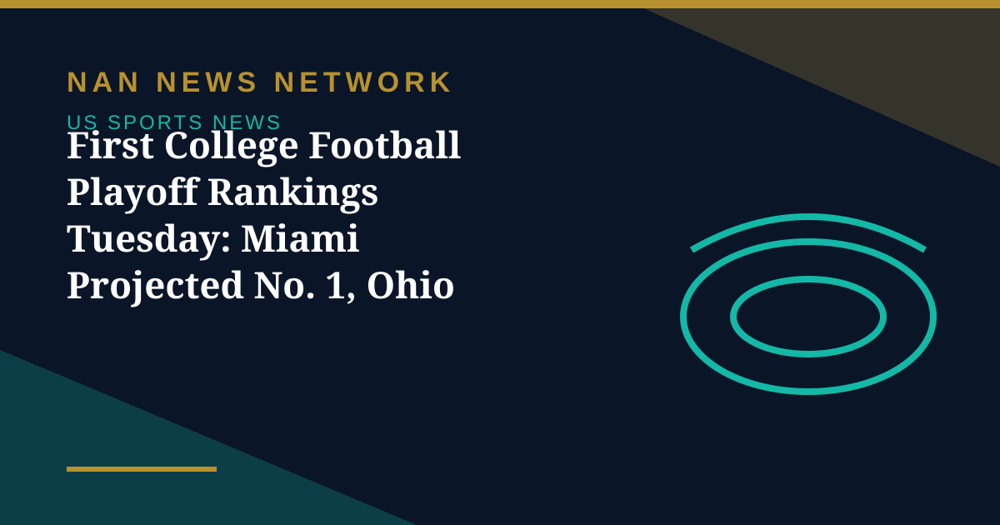
The first College Football Playoff rankings arrive Tuesday, November 3 at 7 p.m. ET, with Miami projected No. 1 and two-loss Ohio State's fate — after its 30-18 loss at USC — the biggest question.
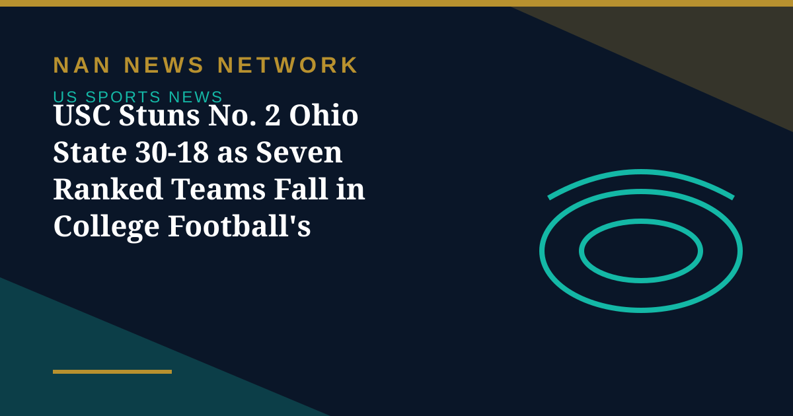
Southern California beat No. 2 Ohio State 30-18 on a Halloween Saturday that saw seven ranked teams lose, shaking up the race ahead of Tuesday's first College Football Playoff rankings.
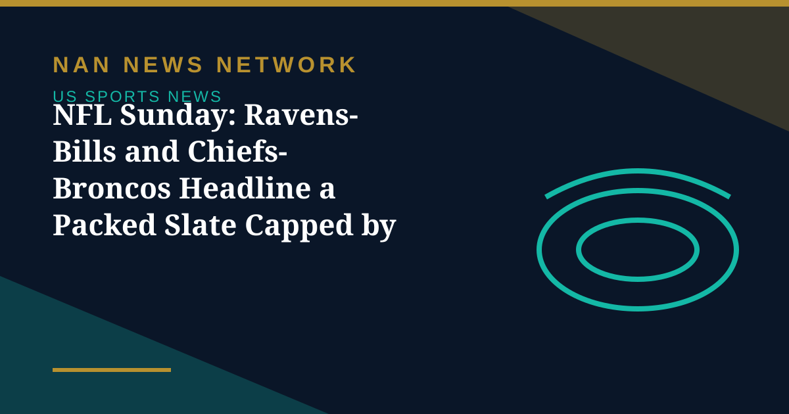
Sunday's NFL slate features Ravens at Bills and Chiefs at Broncos among the afternoon games, closing with Eagles at Commanders on Sunday Night Football — with results still to come at writing time.
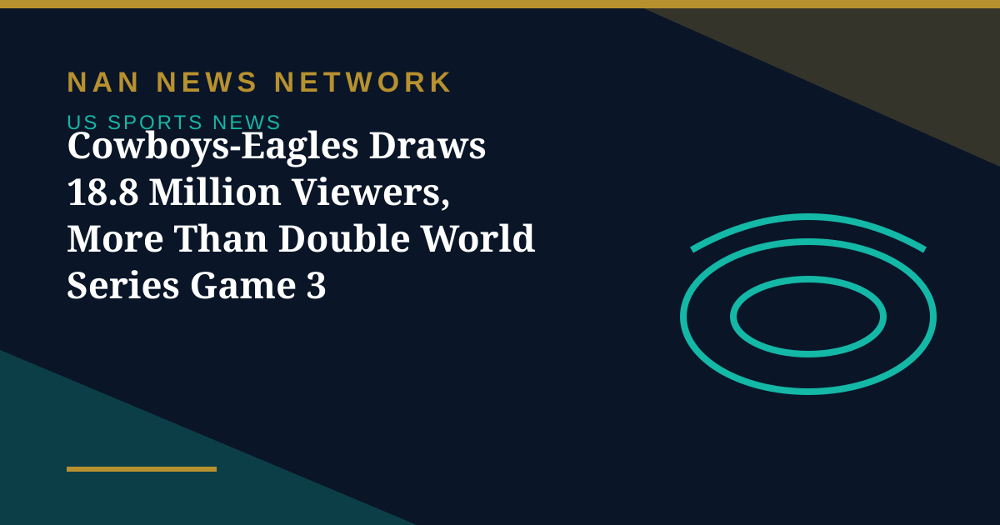
Monday Night Football's Cowboys-Eagles game drew 18.8 million viewers, dwarfing the 8.33 million who watched World Series Game 3 between Milwaukee and Tampa Bay.
The Milwaukee Brewers celebrated their first World Series championship with a victory parade in Milwaukee on October 30, two days after clinching the title at Tampa Bay.
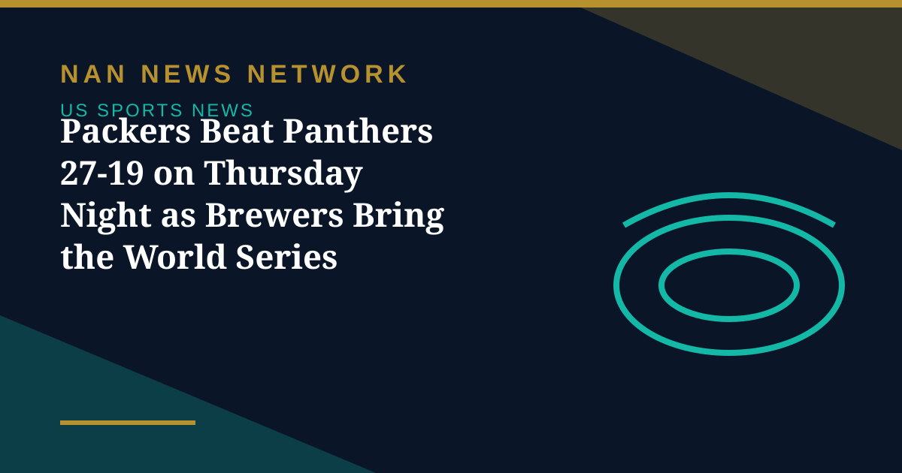
Green Bay beat Carolina 27-19 on Thursday Night Football, moving to 5-3, as Jordan Love threw for 288 yards and the Brewers paraded their new World Series trophy at Lambeau Field.
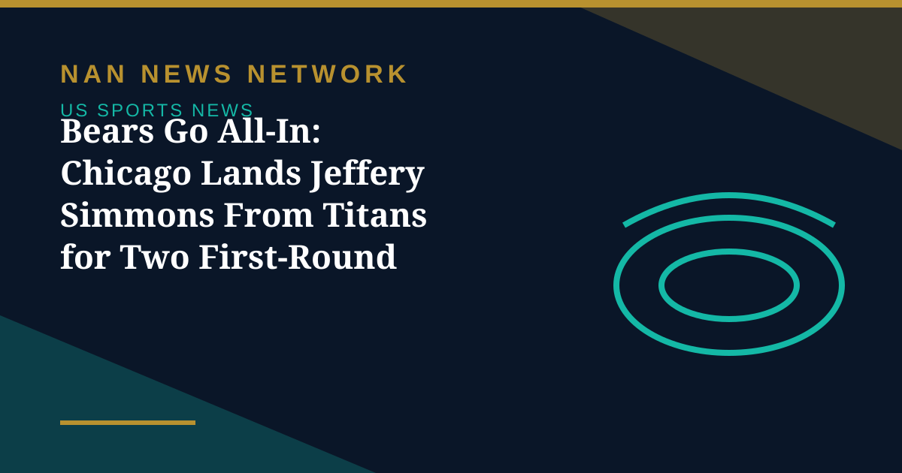
The Chicago Bears acquired All-Pro defensive tackle Jeffery Simmons from the Tennessee Titans on October 29, sending two first-round picks plus a fourth-rounder in the NFL's loudest move of the season.
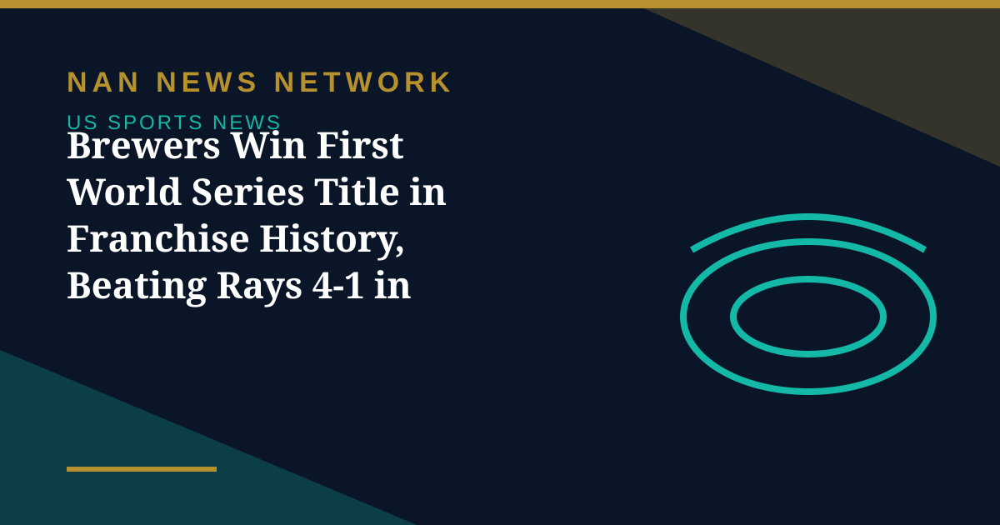
The Milwaukee Brewers beat the Tampa Bay Rays 4-1 in Game 5 on October 28, clinching the first World Series championship in the franchise's 58-year history.
The Carolina Panthers visit the Green Bay Packers on Thursday Night Football tonight, with both teams coming off humbling losses and fighting for their playoff positioning.
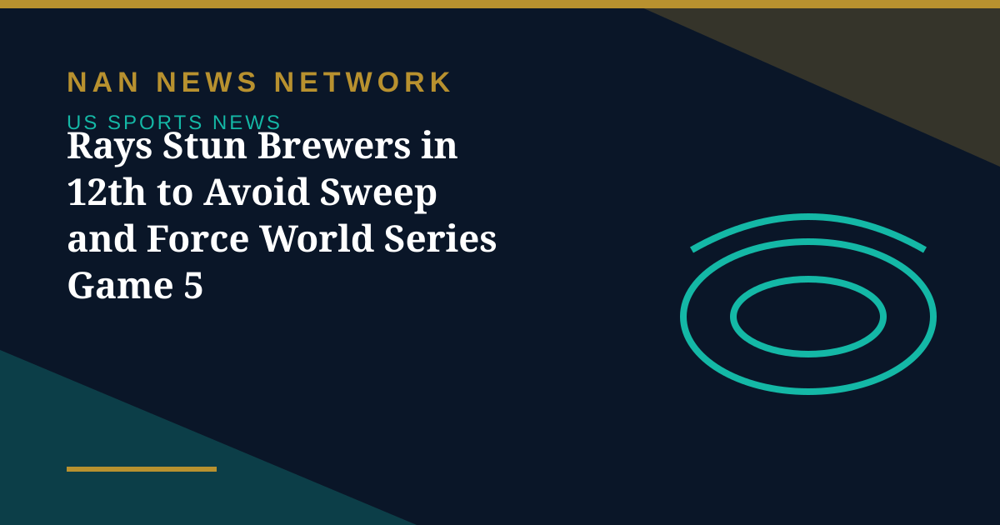
Pinch hitter Ben Williamson's walk-off single in the 12th inning gave Tampa Bay a 4-3 win over Milwaukee in Game 4, keeping the Rays alive in the World Series.
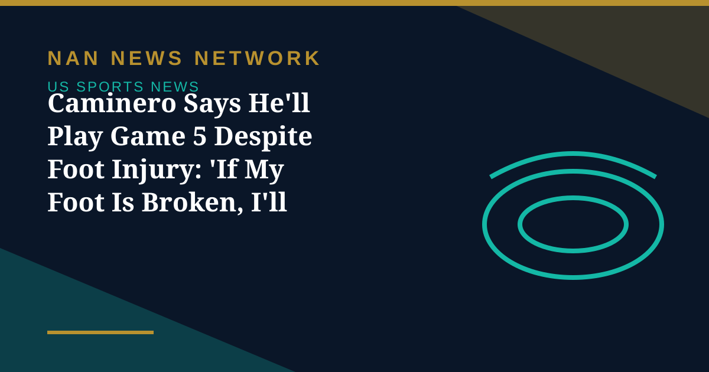
Rays slugger Junior Caminero injured his left foot during the Game 4 rally but vowed to play in Wednesday's must-win Game 5 against Milwaukee.
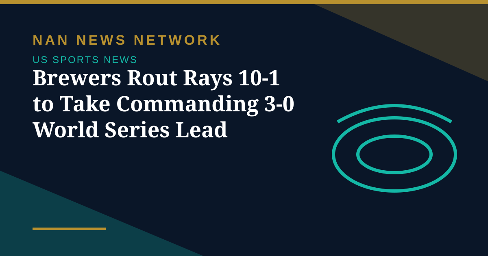
Milwaukee dismantled Tampa Bay 10-1 in Game 3 behind an eight-run fifth inning, moving one win from a World Series title and a first championship for the franchise.
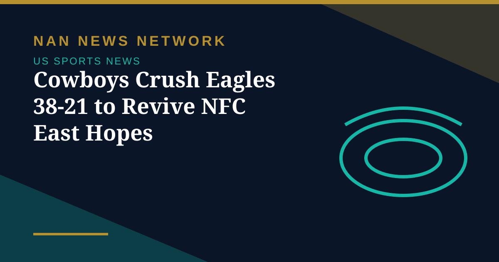
Dallas bounced back in the division race by beating Philadelphia 38-21 on Monday night, handing the defending champions their fifth straight loss behind three Dak Prescott touchdown passes.
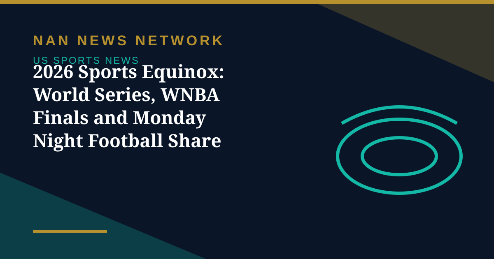
Monday, October 26 is the 2026 sports equinox, a rare night when the World Series, the WNBA Finals, Monday Night Football and regular-season NBA and NHL games all take place.
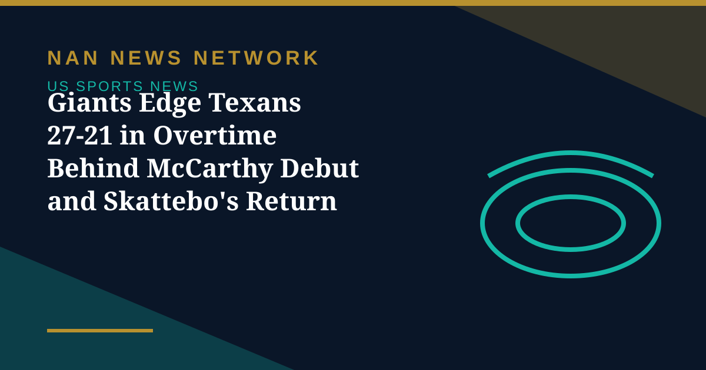
The New York Giants beat the Houston Texans 27-21 in overtime on Sunday, fueled by a strong debut from J.J. McCarthy and a bounce-back rushing day from Cam Skattebo.
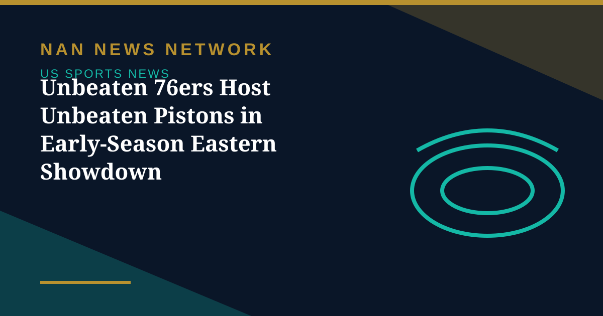
Philadelphia entered Sunday 3–0 and Detroit 2–0, with both teams living up to preseason contender billing — and both managing key absences for the Oct. 25 clash.
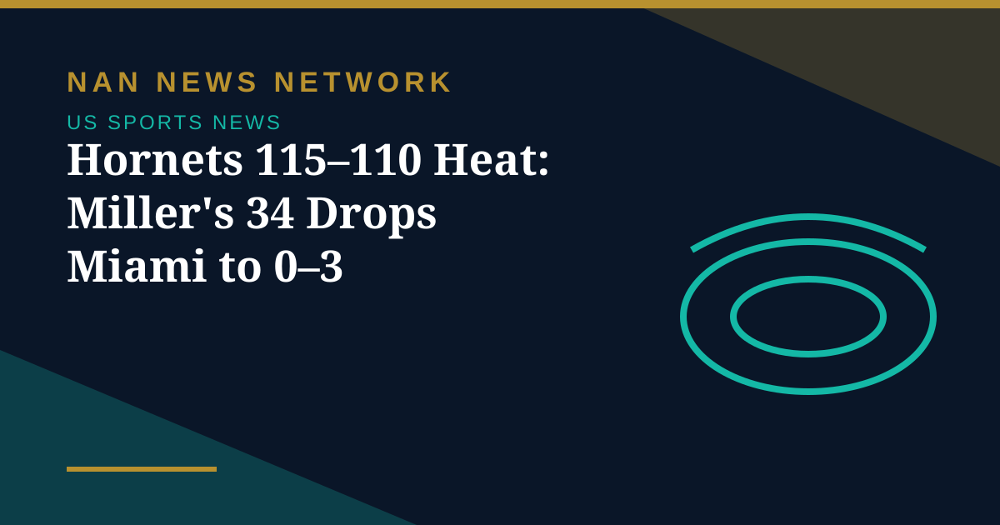
Brandon Miller bounced back from one of the worst nights in Hornets history to score 34, as Charlotte held off a late Miami rally and left the star-studded Heat winless.
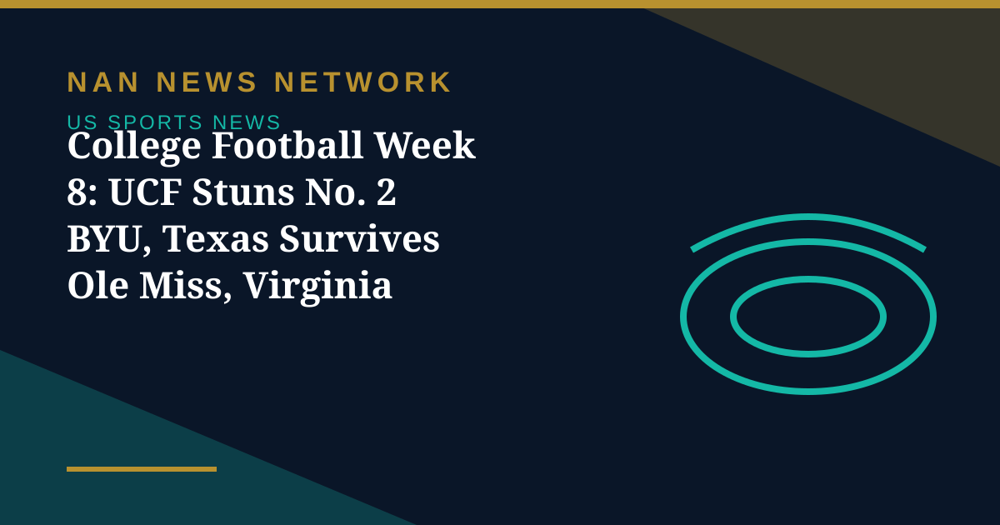
Week 8 delivered upsets everywhere: UCF beat No. 2 BYU in double overtime, Indiana survived Michigan 13–6 in overtime, and Virginia Tech won 20–16 at Clemson on a late fourth-down touchdown.